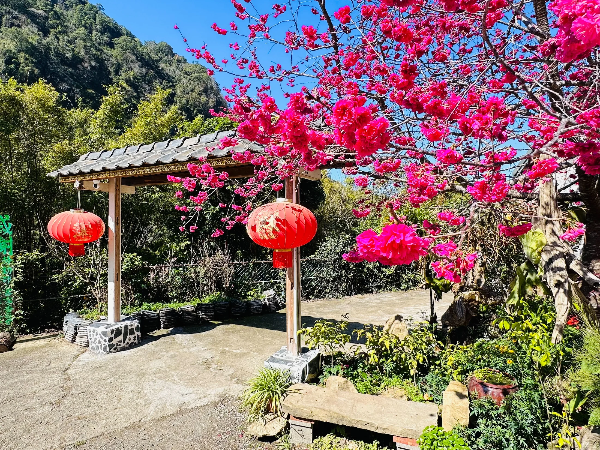
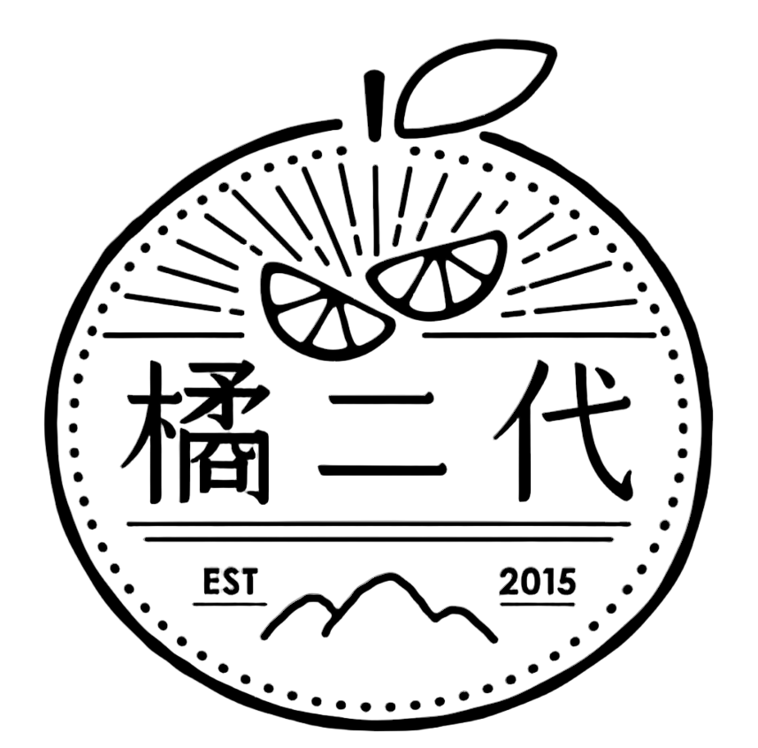
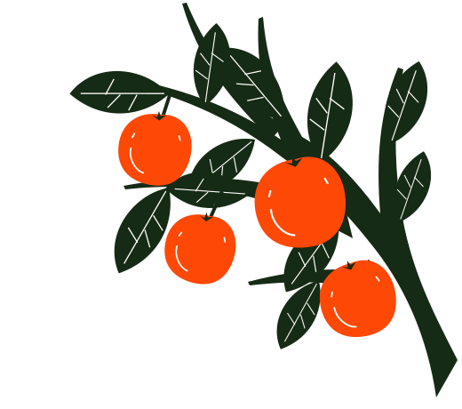
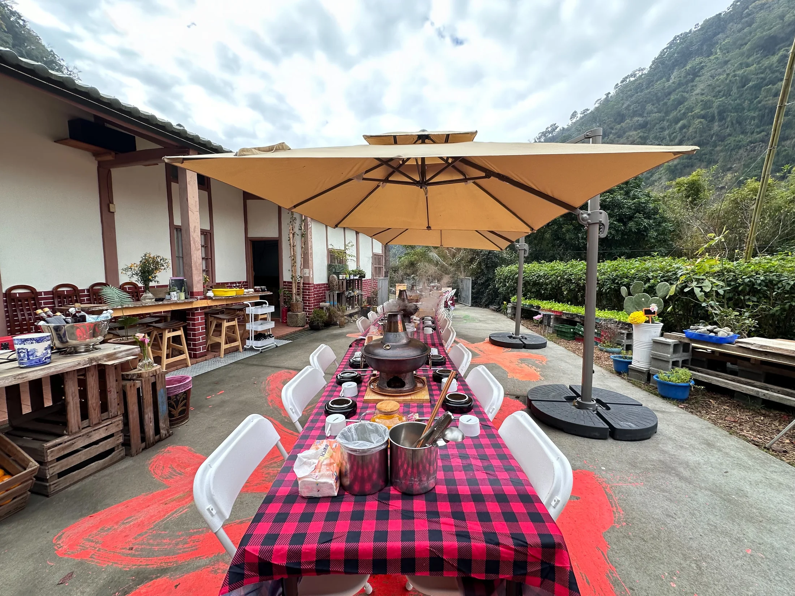
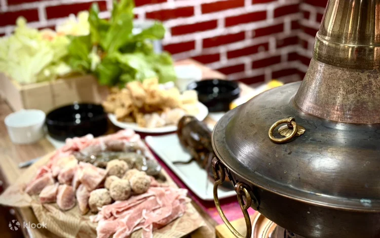
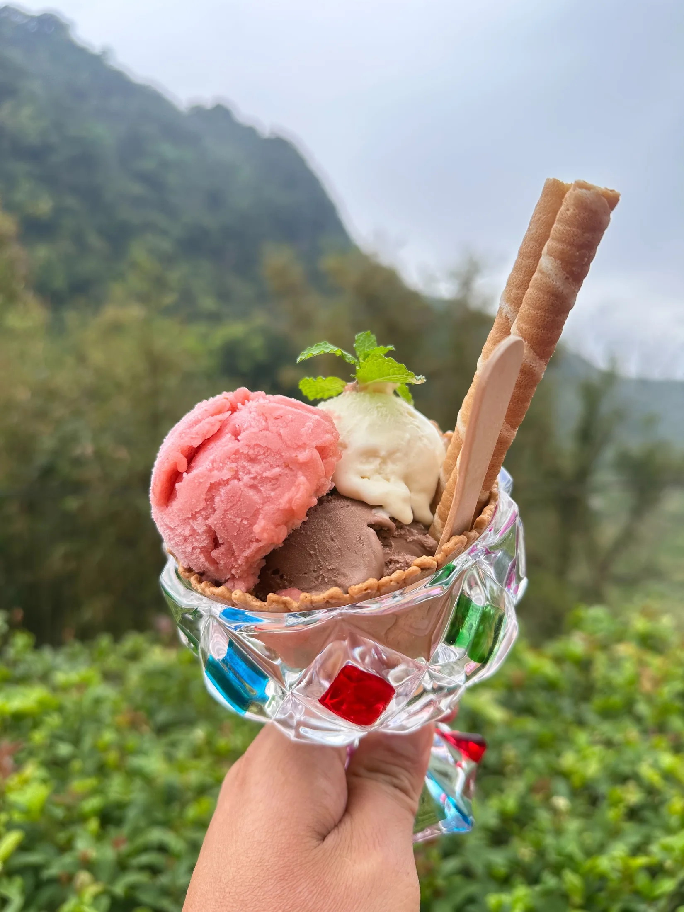

以福菜入湯，搭配鍋物配料。喜歡客家醃漬香氣，可以先問問這一鍋。

關於我們從橘二代，
從橘二代，
到伍貳居所。
橘二代從返鄉務農開始，與在地農人合作，將水果做成果汁、冰淇淋，讓外觀不完美的果實也有用途。
伍貳居所延續同樣的想法。把老屋整理成餐廳，保留原有的木作與竹編夾泥牆，餐桌上則以客家口味為主。
舊的東西能繼續用，好的食材不要浪費。
到 Facebook 看近況
伍貳居所聯絡訂位橘二代

苗栗・泰安・清安村
老屋裡的客家餐廳
福菜銅鍋、客家鹹湯圓，
飯後還有橘二代的水果冰淇淋。


餐點實拍 · Klook
橘二代的做法很簡單。

橘二代從返鄉務農開始，與在地農人合作，將水果做成果汁、冰淇淋，讓外觀不完美的果實也有用途。
伍貳居所延續同樣的想法。把老屋整理成餐廳，保留原有的木作與竹編夾泥牆，餐桌上則以客家口味為主。
舊的東西能繼續用，好的食材不要浪費。
到 Facebook 看近況訂位、餐點與當日營業情形，
直接詢問店內最準確。
出發前請來電確認
當日營業與餐點供應。
請撥打 037–941–068，告訴店內預計用餐的日期與人數，由店家確認座位。
冰品依當季水果與店內供應調整，請於訂位時詢問。冰研所另有清安村 59 號據點，本頁地圖指向伍貳居所餐廳。
可以先告知店內需要避開的食材，由店家確認能否提供適合的餐點。